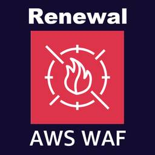

ForgeVision Engineer Blog
https://techblog.forgevision.com/
フォージビジョン エンジニア ブログ
フィード

【re:Inforce 2025 速報】AWS WAF の新コンソールを解説
ForgeVision Engineer Blog
Orca Security 担当の尾谷です。先日 AWS re:Inforce 2025 で発表された「AWS WAF の新コンソール UI」が、個人的にとてもインパクトがあったので、本ブログにてポイントをまとめてみたいと思います。
4日前

Data Migration Box（DMB）を使って GoogleDrive へデータ移行してみた
ForgeVision Engineer Blog
こんにちは、プラットフォームビジネスグループ 浜口です。 今回は Data Migration Box（DMB）を使った Google Drive へのデータ移行について紹介したいと思います。 はじめに Data Migration Boxとは 移行概要 インストール データ同期方式 データ同期設定 スケジュール設定 データ移行 帯域制御 性能確認結果 Migration Explore まとめ はじめに オンプレ環境からクラウドストレージへの移行を検討する企業は少なくないと思いますが、 今回は移行先候補の一つでもある Google Drive に「Data Migration Box」を使っ…
10日前
Powertools for AWS LambdaのBedrock Agent連携を活用して、書籍推薦エージェントを手軽に作ってみた
ForgeVision Engineer Blog
こんにちは、フォージビジョンの藤岡（@fuji_kol_ry）です。 先月5月末にAWS公式から、Lambdaの開発を加速するライブラリ"Powertools"にて、Bedrock Agentとの連携が発表されました。 aws.amazon.com これは個人的には非常に嬉しいニュースで、Bedrock AgentやTool useの開発効率が大幅に向上することが期待されます。 早速試したいと思っていたところ、ちょうどのタイミングでJAWS-UGで登壇する機会をいただいたため、せっかくならと思ってPowertoolsの魅力を発信してきました！！以下が発表資料です。 speakerdeck.co…
13日前
AWS Summit Japan 2025 に出展します！
ForgeVision Engineer Blog
こんにちは！ 営業部の鈴木です。 こちらのページ でもご紹介していますが、フォージビジョンは AWS Summit Japan 2025 に今年もブロンズスポンサーとして出展します。 日本最大の AWS イベント 毎年延べ40,000人が参加する本イベントは、6月25日(水)、26日(木)の2日間にわたり、幕張メッセで開催されます！ AWSに関して学習し、ベストプラクティスの共有や情報交換ができる、クラウドでイノベーションを起こすことに興味がある全ての皆様のためのイベントとなっております。 昨年の出展の様子はこちらをご覧ください！ techblog.forgevision.com 展示概要 ～…
19日前
AWS WAF Web ACL Rule "Allow" と "Count" の違いを理解したよ
ForgeVision Engineer Blog
こんにちは、AWSグループの平原です。 皆様は、ダーツという室内競技をプレイしたことがあるでしょうか？ ダーツは円形のボードにアローを投げ、得点を競う室内競技です。 ゲームの種類は、シンプルに得点を競うカウントアップや特定の点数からカウントを減らしていくゼロワン、的のエリアを取り合うクリケットなどがあります。 最近では、ダーツバーやアミューズメント施設などで気軽に楽しむことができます。 私は会社のイベントなどで楽しむ程度ですが、とても面白い競技だと感じています。 皆様も機会があればぜひ挑戦してみてはいかがでしょうか。 といったところで今回は、AWS WAF Web ACL Rule の"All…
23日前
Orca Security のユーザー作成履歴の可視化：Audit Logs の活用方法
ForgeVision Engineer Blog
こんにちは、Orca Security 担当の尾谷です。Orca のユーザーを効率的に棚卸しする方法をご紹介します。
25日前
Copilot Studio×Azure AI SearchでRAG実践：SlackのやりとりをRAG化してみた
ForgeVision Engineer Blog
こんにちは、プラットフォームビジネス事業グループ 十時（とどき）です。 生成 AI の導入が本格化するなか、RAG は社内データを安全に活かす次世代検索基盤として国内でも急速に注目を集めています。 本記事では、 Copilot Studio × Azure AI Search で Slack のやり取りを RAG 化し、Microsoft 365 Copilot から Q&A できるパイプライン を構築してみたので、完成までの軌跡を投稿させていただきます。 💡 この記事で学べること RAGが何なのか Copilot StudioとAzure AI Searchを使ったRAGの環境のつくり方 S…
1ヶ月前
クロスアカウントでDMS？しかもVPC Peering禁止？やってみたら案の定ハマった話
ForgeVision Engineer Blog
AWSグループのナガトモです。前回、DMSで見事にハマったばかりなんですが、傷が癒える間もなく、またDMSで事件が起きましたのでシェアさせてください！！
1ヶ月前
Orca Security、AWS Security Hubとの統合でクラウドリスクの可視性を強化
ForgeVision Engineer Blog
Orca Security 担当の尾谷です。とうとう Security Hub の SOAR 機能が公開されましたので、早速試してみました。
1ヶ月前
Amazon Q Developer CLI で漁師が戦うゲームを作ってみた(Windows 版)
ForgeVision Engineer Blog
こんにちは、こんばんわ！クラウドインテグレーション事業部の魚介系エンジニア松尾です。 今回は Amazon Q Developer CLI のみを使ったゲーム開発にチャレンジしてみましたので、ゲーム完成までの軌跡を投稿させていただきます。 開発に至る経緯 2025/5/21に AWS Community Builders 向けの Slack ワークスペースで、アジア圏在住の人を対象に以下の記事が紹介されました。 community.aws 記事の内容として Amazon Q Developer CLI を用いたゲーム開発を行うというもので、完成したゲームをブログ、SNS で紹介したり Gith…
1ヶ月前
【2025 年版】Orca Security × Microsoft Teams 連携ガイド：アラート通知の効率化と活用方法
ForgeVision Engineer Blog
こんにちは、尾谷です。2025 年版、Orca と Teams の連携方法をご紹介します。今回の検証で、Orca Security Bot も確認できたので、併せてご紹介します。
1ヶ月前
Amazon Q Developer CLIをオプトアウト設定したい！(Windows端末)
ForgeVision Engineer Blog
WSLを利用しインストールしたAmazon Q Developer CLI のオプトアウト設定についてご紹介
2ヶ月前
CloudFront SaaS Managerマルチテナントディストリビューションを図解してポイント整理してみた
ForgeVision Engineer Blog
こんにちは、AWSグループの藤岡です。 2025年4月28日に、Amazon CloudFront SaaS Manager（以降SaaS managerと記載）の一般提供（GA）が発表され、「マルチテナントディストリビューション」が作成できるようになりました。 aws.amazon.com SaaSに特化したCloudFrontの新機能は、これまでのSaaSアプリケーションの設計や運用に一石を投じる存在ではないかと個人的には感じています。 そこで本ブログでは、SaaS Manager・マルチテナントディストリビューションを実際に構築して、そこから得た特徴や機能を図解しながら整理することで、S…
2ヶ月前
【2025 年版】Orca Security の『Attack Paths』が進化：新旧比較で読み解く“実用性”と“深み”
ForgeVision Engineer Blog
Orca Security 担当の尾谷です。昨年末にリニューアルした Attack Paths をご紹介します。
2ヶ月前
AWS DMS × PostgreSQL でカラムが更新されない？実際にハマった原因と解決法
ForgeVision Engineer Blog
AWSグループのナガトモです。PostgreSQL のカラムでちょっとハマりましたのでシェアします！
2ヶ月前
Control Tower のデプロイが失敗する？原因は“クレカ未承認”だった話
ForgeVision Engineer Blog
こんにちは、尾谷です。AWS Control Tower setup falled. Be sure your account is subscribed to the AWS EC2 service, then tryagain. If this error persists, contact AWS Support.を調査しました。
2ヶ月前
Amazon SES Eメールテンプレートのあれこれ
ForgeVision Engineer Blog
こんにちは、AWSグループの平原です。 皆様は、一品ずつ出してくれるテンプラ屋さんに行ったことがあるでしょうか？ 私は最近やっと一品ずつ出てくるテンプラ屋さんに行きました。ファミレスで食べるテンプラとはやはり違いを感じました！ といったところで今回は、Amazon SES のEメールテンプレートを使用したときのあれこれを記事にします。 Eメールテンプレートを利用して定型的なメールの送信を考えている方、既に使用している方の参考になれば幸いです。 はじめに 今回のEメールテンプレートの記事は、保存済みテンプレートを使用したときの内容になります。 保存済みテンプレートの制限 テンプレート作成可能最大…
2ヶ月前
画像処理技術を学びたい方向け資料公開！「画像解析の基礎から実践～独自開発の画像解析技術をプログラムの詳細まで一挙公開～」
ForgeVision Engineer Blog
こんにちは、営業部の鈴木です。 今回は、画像処理技術を学びたい方におすすめの資料を公開しましたのでお知らせいたします！ 弊社では「人は目で見て、脳でどう判断しているのか？」 元ソニーのハイビジョンTV開発エンジニアが長年の探求の末に考案した画像解析アルゴリズム「ABHB」活用し 汎用的なAIでは解決が困難な課題に対して、製造・医療・交通インフラなど様々な分野で採用いただいております。 本資料では、メルマガでもご好評いただいた4資料 ①ABHBの基本プログラム／前処理技術 ②色解析／明るさ(影)解析 ③領域特定／形状認識 ④歪補正 について、高度な画像解析を実現するABHBの基本概念から、実践的…
3ヶ月前
Amazon FSx for NetApp ONTAP のストレージコストを最適化するためのガイド
ForgeVision Engineer Blog
こんにちは、こんばんわ！クラウドインテグレーション事業部の魚介系エンジニア松尾です。 今回は Amazon FSx For NetApp ONTAP について、私が過去に経験したストレージコスト部分の躓きポイントと最適化する方法についてご紹介させていただきます。 はじめに Amazon FSx for NetApp ONTAP とは？ Amazon FSx for NetApp ONTAP のコスト構成 リソースのデプロイパターン SSD ストレージキャパシティ SSD IOPS スループットキャパシティ キャパシティプール キャパシティプールの読み取りリクエスト キャパシティプールの書き込み…
4ヶ月前
S3 Tablesのデータはどう更新する？INSERT・DELETE・UPDATE・MERGEを実践！
ForgeVision Engineer Blog
こんにちは、開発グループの寺田です。 本記事では、Amazon Athenaを使用して、INSERT・DELETE・UPDATE・MERGEクエリを実行し、S3 Tablesのデータ変更を検証します。 INSERT INTO DELETE UPDATE MERGE INTO まとめ INSERT INTO Athena IcebergのINSERT INTOは、Icebergテーブルに複数件のデータ登録が可能で、 スキャンしたデータ量に応じて課金されます。 INSERT INTO [db_name.]table_name [(col1, col2, …)] query それではレコードを数件登…
5ヶ月前
実践編②：マルチテナントSaaS開発を加速させるSaaS Builder Toolkit（SBT）の魅力
ForgeVision Engineer Blog
こんにちは、AWSグループの藤岡（@fuji_kol_ry）です。 本ブログ、マルチテナントSaaS開発ツールのSaaS Builder Toolkit (SBT)についてご紹介するシリーズ物の第3回です。 ここまでの2編（導入編、実践編①）を読んでいない方は、ぜひご一読いただければと思います。 No. 1、導入編：SBTの概要、アーキテクチャの説明 No. 2、実践編①：動作検証、テナント作成、ユーザー登録 No. 3、実践編②：認証を使ったCRUD操作、まとめ ※実装の紹介もあって長文のため、結論はコチラです！ techblog.forgevision.com techblog.forge…
5ヶ月前
S3 Tablesとは？ 初めてのセットアップ & クエリ実行
ForgeVision Engineer Blog
こんにちは、開発グループの寺田です。 本記事では、2025年1月に東京リージョンで利用可能になった「S3 Tables」 について、 AWSの公式チュートリアル「S3 Tables の使用開始」を実践した内容を紹介します。 S3 Tablesとは？ チュートリアルの実践 テーブルバケット作成＆AWS分析サービスとの統合 名前空間とテーブルの作成 テーブルにLake Formationの権限を付与 Athena で SQL を使用してデータをクエリ まとめ S3 Tablesとは？ S3 Tablesは、2024年12月3日 AWS re:InventのCEO Matt Garman氏のKeyn…
5ヶ月前
実践編①：マルチテナントSaaS開発を加速させるSaaS Builder Toolkit（SBT）の魅力
ForgeVision Engineer Blog
こんにちは、AWSグループの藤岡（@fuji_kol_ry）です。 前回の記事で、導入編として、AWSが提供するマルチテナントSaaS開発ツールのSaaS Builder Toolkit (SBT)についてご紹介しました。 今回は、実際にSBTを使ってSaaS基盤を構築や動作確認をして、SBTの使い勝手についてお伝えいたします。 なお本シリーズは以下の3部構成になっていますため、前回の記事を読んでいない方は、ぜひご一読いただければと思います。 No. 1、導入編：SBTの概要、アーキテクチャの説明 No. 2、実践編①：動作検証、テナント作成、ユーザー登録 No. 3、実践編②：認証を使ったC…
5ヶ月前
導入編：マルチテナントSaaS開発を加速させるSaaS Builder Toolkit（SBT）の魅力
ForgeVision Engineer Blog
こんにちは、AWSグループの藤岡（@fuji_kol_ry）です。 突然ですが、皆さんはSoftware as a Service（SaaS）の開発で、テナント管理や認証認可、オンボーディングなど、無いと困るけど有ったところで大きな競合優位性を付けにくい機能の提供で、想定以上に時間を掛けてしまった経験はないでしょうか。（私はあります） 一般機能（コントロールプレーン）の開発が負担となって、競合優位性となる中核（アプリケーションプレーン）の開発に注力しにくくなるのが、SaaS開発の大きなジレンマです。 そういった課題に対して、AWSから SaaS Builder Toolkit (SBT) が提…
5ヶ月前
【JAWS DAYS 2025】Gold Supporterとして参加します！
ForgeVision Engineer Blog
こんにちは。営業部の鈴木です。 今年もフォージビジョンは、2025年 3月1日(土) に池袋サンシャインシティで開催される「 JAWS DAYS 2025」にGold Supporterとして協賛します。 弊社の所属エンジニア・営業の4名がすでに運営として参加させていただいており、準備も着々と進んでおります。 昨年の様子はこちらから！ techblog.forgevision.com JAWS DAYSとは？ 主催 JAWS-UG（Japan AWS User Group）、後援 アマゾン ウェブ サービス ジャパン合同会社で行われる JAWS-UG 最大のイベントです。 全国の JAWS-U…
5ヶ月前
Amazon Bedrockを活用した3つのLLMカスタマイズ： ファインチューニング/事前学習/モデル蒸留
ForgeVision Engineer Blog
はじめに こんにちは、AWSグループの藤岡（@fuji_kol_ry）です。 生成AIやLLMの利用が広まる中で、特定のユースケースに合わせてモデルをカスタマイズする重要性が高まっています。 前回の記事では、SageMaker Autopilotを使用したファインチューニングについて紹介して、LLMのチューニングの魅力について触れました。 techblog.forgevision.com Autopilotの他にも、LLMを扱うAWSサービス・プラットフォームとして、Amazon Bedrockが非常に有名です。Bedrockでは、独自のデータやユースケースに基づいたカスタムモデルの構築が可能…
5ヶ月前
AutoMLでLLMを最適化する時代： Autopilotによる高効率なファインチューニング
ForgeVision Engineer Blog
こんにちは、AWSチームの藤岡です。 昨年末にAWSから、大規模言語モデル（LLM）に関する以下の記事が公開されました。 aws.amazon.com AutoMLツールであるSageMaker Autopilotを活用して、業界ドメインに特化したチューニングをオートメーションで行う方法を紹介しています。なかなか魅力的ですね！ そこで、本記事では、 AWSのオートメーション機能を使用したLLMのファインチューニングの手順と、RAGとの使い分けについて、ご紹介したいと思います。（結論はコチラです） ファインチューニングとは LLMのファインチューニングは、端的に説明すると、LLMに対してタスクや…
6ヶ月前
【コレクター必見！】これまでリリースされてきた AWS BuilderCards をご紹介します
ForgeVision Engineer Blog
こんにちは、AWS グループの尾谷です。 本ブログでは、これまでリリースされてきた AWS BuilderCards をご紹介します。 更新履歴 2025/03/03 JAWS DAYS 2025 で配布されたカードを追加しました。 本ブログが取り扱うもの インターネット上をググると、AWS BuilderCards の紹介や、遊び方などが解説されたブログを参照できますが、各エディションや、さまざまなイベントなどで配布されてきた 限定カードを取り上げた記事がなかったので、まとめてみたいと思います。 このブログで、全てのカードを網羅できていないと思いますし、AWS BuilderCards の …
6ヶ月前
AWSサービスで完結した外形監視のアプローチを整理・比較してみた
ForgeVision Engineer Blog
こんにちは、AWSグループの藤岡です。 Webサービスにおける外形監視は欠かせませんが、「サービス的にそこまで凝った監視は要らない」「プロジェクト規模的に高額なオブザーバビリティサービスを導入できない」といった場面はよくあると思います。 そういった時に有効なアプローチとして挙げられるのが、AWSのサービスを活用した、安くかつAWSで完結した外形監視を実現することです。 そこで今回は、AWSサービスで完結した外形監視のアプローチを3つご紹介します。 先に結論を書くと 執筆時点でのAWSサービスを使うと、長所・短所が異なる以下3つの外形監視アプローチが有効です。 監視要件、コスト、運用手間を踏まえ…
6ヶ月前
【re:Invent 2024】AWS 新 CEO Matt Garman のビジョンとは？re:Invent 2024 キーノート徹底解説！
ForgeVision Engineer Blog
こんにちは、AWS グループの尾谷です。Matt さんの Keynote を視聴して感じたことを語ってみます。
7ヶ月前